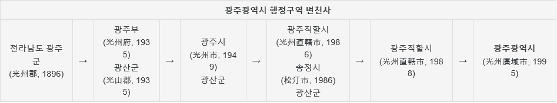
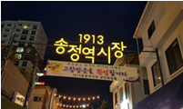
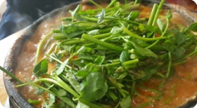
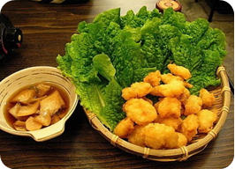

bgm click!
목차
- 광주의 행정구역 변천사
- 광주의 볼거리
- 광주의 대표음식
<광주의 행정구역 변천사>

<광주의 볼거리>
🐧양림동 펭귄마을
⛰️무등산
🏬1913 송정역시장

- 1913년 매일송정역전시장이란 이름으로 열었던 시장이 103년의 역사를 강조하기 위해 1913송정역 시장으로 이름을 바꿈
- 옛 정취를 살리자는 취지로 건물 리모델링은 최소화하고 간판의 디자인은 상인들의 추억을 담아 제작되어 옛 향수를 느낄 수 있음
- 수제맥주가게가 있어 펭귄마을과 마찬가지로 커플 데이트 장소로 유명
- 1913송정역시장 홈페이지
<광주의 대표음식 2가지>
🦆오리탕

- 광주 5미중 하나(광주 5미)
- 오리고기에 머윗대나 감자, 무 등의 부재료와 양념장을 넣고 끓인 음식
- 실제로 먹어보면 메인은 오리고기가 아닌 미나리라는걸 알 수 있음
🥟상추튀김

- 상추를 튀겨서 먹는 음식이 아닌 주로 오징어나 채소가 들어간 튀김을 상추에 싸먹는 음식
- 상추를 튀기는 음식은 일본의 덴뿌라나 중화 요리에 실제로 있음